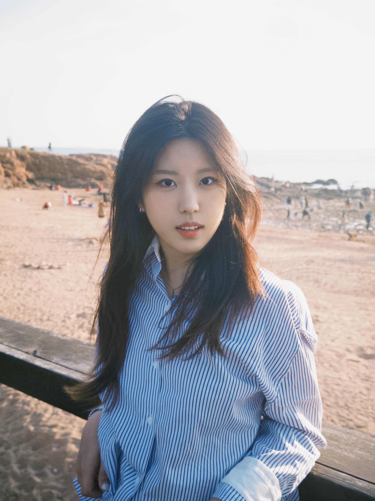

About me
From visual design
to how people interact.
I’m Nancy Liu, a 2026 Visual Communication Design graduate from Shandong University of Art & Design. I received the 2025 National Scholarship from China’s Ministry of Education. My work has also been recognized at the Milan Design Week national exhibition and the International Wandering Poster Biennial. I work across visual and interface design, information visualization, physical prototyping, and qualitative research.
My interest in HCI began with a project that used light to support conversation between generations. It led me to tangible interaction and human–AI interaction. I explore how design responds to people’s feelings and actions by building things people can try.
Since then, I’ve taught myself hardware and programming and built a working AI puzzle. I also worked with a team at East China Normal University to study how children and parents want AI to take part in brick play. I’m the second author on our CHI 2027 submission.
Tools
- Figma
- Illustrator
- Photoshop
- After Effects
- Python
- ESP32
- Raspberry Pi
- Generative AI APIs